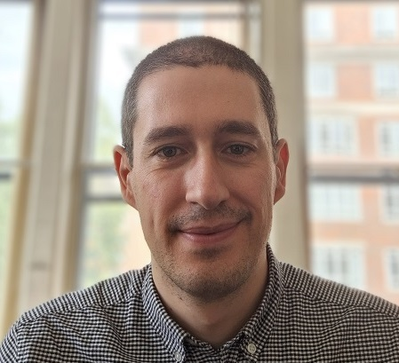
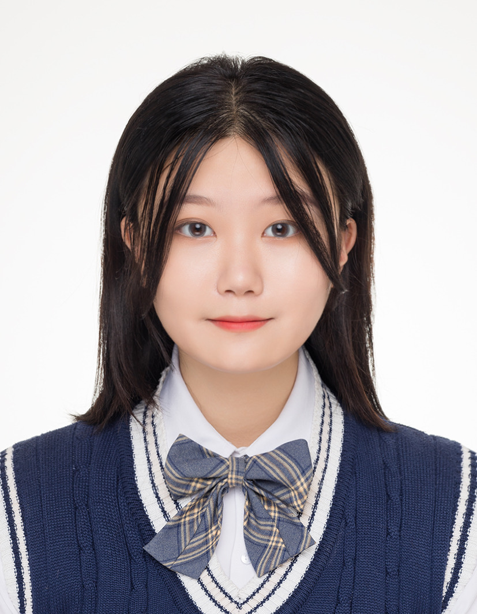
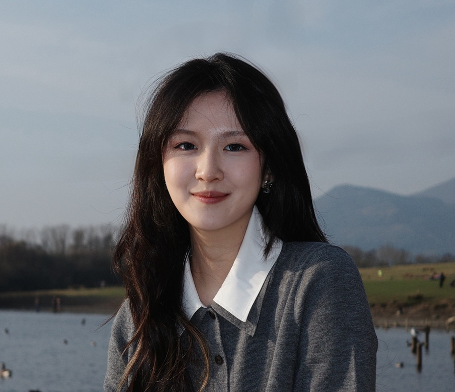
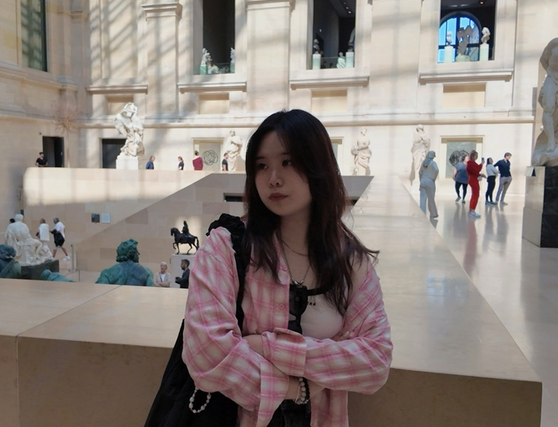
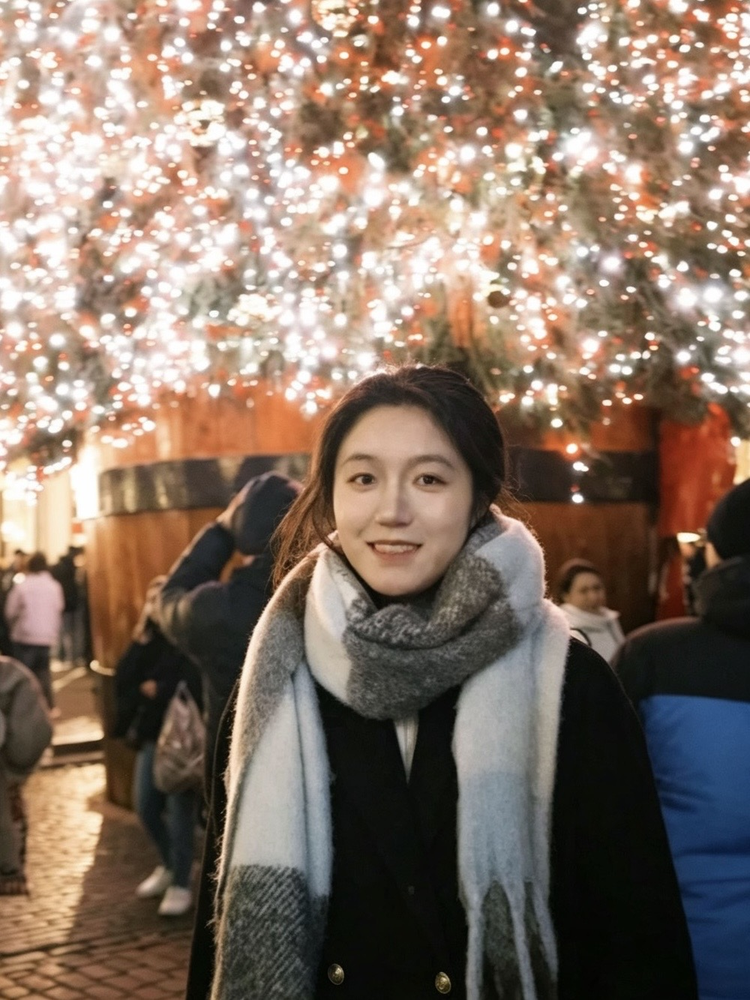
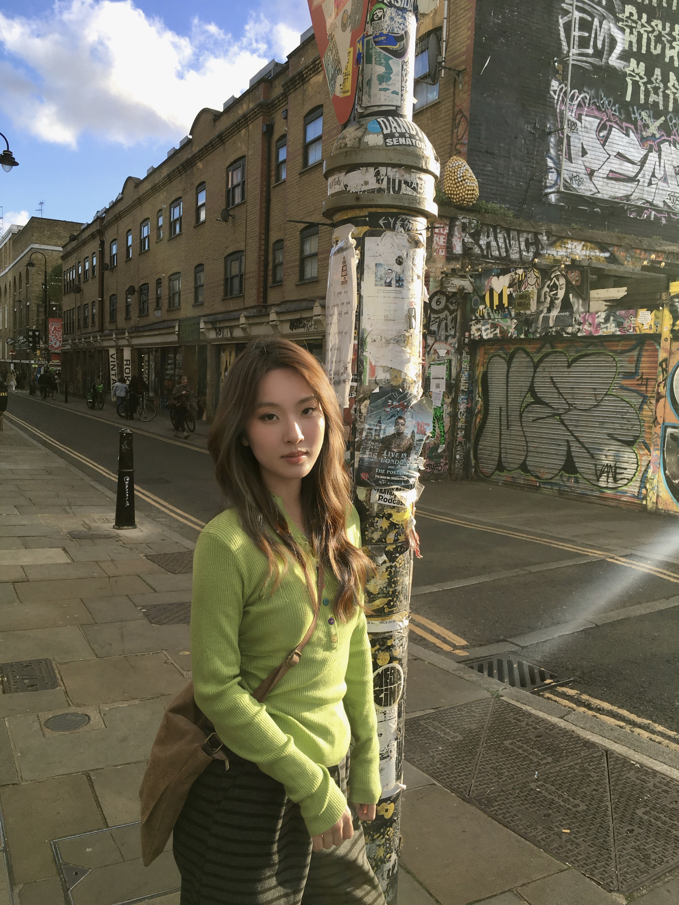

People
Researchers and students
The group brings together students and researchers interested in eye movements, attention, reading and quantitative methods. Our projects also connect to a wider network of collaborators across universities and disciplines.
Group lead
Martin R. Vasilev

Lecturer in Experimental Psychology · University College London
Martin studies how people control their eyes during reading and visual tasks, and what eye movements reveal about attention. His current work focuses on auditory distraction, saccade targeting and regressions during reading, individual differences in attentional control, and methods for scalable webcam eye tracking.
His research combines experimental psychology with quantitative modelling, open-source software development and collaborative projects spanning psycholinguistics, attention and computational methods.
ORCID · GitHub · Personal website
Current researchers
Students and research assistants

Hanyue Lei
MSc graduate · Research collaborator
Hanyue studies how adult ADHD influences eye-movement patterns and reading comprehension, comparing adults with ADHD and neurotypical controls. Her interests bridge cognitive psychology with educational and clinical applications.

Hainuo Wang
Undergraduate researcher
Hainuo (Nora) Wang works on an eye-tracking project investigating corrective saccades during reading. Her broader interests include visual perception, attention and language cognition.

Nancy Yang
Research assistant
Nancy's interests include eye movements, visual cognition, reading and attention. She has supported EyeLink studies and developed experience in participant testing, R and Bayesian mixed-effects modelling.

Yinan Xia
MSc researcher
Yinan studies individual differences in language learning and processing, with a particular interest in eye movements during reading, auditory distraction and psycholinguistic approaches to attention.
Abdur Miah
Student researcher
Abdur is interested in understanding how people think and behave, with broader interests in resilience, psychology and computer programming.

Kexin Zhou
MSc researcher
Kexin studies how auditory distraction influences eye movements and reading comprehension in adults with ADHD compared with neurotypical adults. She has a background in linguistics and language science.
Collaborative research environment
A wider network beyond a single laboratory
Many of our projects are carried out with collaborators at other universities and across disciplinary boundaries. This allows students to combine close day-to-day supervision at UCL with access to complementary expertise in psycholinguistics, oculomotor control, computational modelling, open-source eye tracking and applied research.
For prospective PhD students, this means that a project can be intellectually broader than the immediate local group while still having a clear research home at UCL.
Collaboration is part of the research model
We aim to build projects around the expertise they need, rather than restricting questions to methods available within one lab.
Join the group
Interested in becoming part of the research programme?
See current PhD directions or get in touch to discuss a related idea.
Explore PhD opportunities